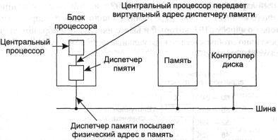
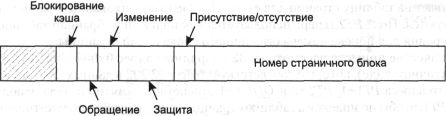

Виртуальная память
Уже достаточно давно люди впервые столкнулись с проблемой размещения программ,
оказавшихся слишком большими и поэтому не помещавшихся в доступной физической
памяти. Обычно принималось решение о разделении программы на части, называемые
оверлеями (overlays). Оверлей 0 обычно запускался первым. После окончания
своего выполнения он вызывал следующий оверлей. Некоторые оверлейные системы
были очень сложными, позволяющими одновременно находиться в памяти нескольким
оверлеям. Оверлеи хранились на диске и по мере необходимости динамически перемещались
между памятью и диском средствами операционной системы.
Несмотря на то что фактическая работа по загрузке оверлеев с диска и выгрузке
на диск выполнялась системой, делить программы на части должен был программист.
Разбиение больших программ на маленькие модули поглощало много времени и было
не слишком интересным занятием. Однако такая ситуация продолжалась недолго,
так как вскоре кто-то придумал способ поручить всю эту работу компьютеру.
Разработанный метод известен как виртуальная память [122]. Основная идея
виртуальной памяти заключается в том, что объединенный размер программы, данных
и стека может превысить количество доступной физической памяти. Операционная
система хранит части программы, использующиеся в настоящий момент, в оперативной
памяти, остальные — на диске. Например, программа размером 16 Мбайт сможет работать
на машине с 4 Мбайт памяти, если тщательно продумать, какие 4 Мбайт должны храниться
в памяти в каждый момент времени. При этом части программы, находящиеся на диске
и в памяти, будут меняться местами по мере необходимости.
Виртуальная память может также работать в многозадачной системе при одновременно
находящихся в памяти частях многих программ. Когда программа ждет перемещения
в память очередной ее части, она находится в состоянии ожидания ввода-вывода
и не может работать, поэтому центральный процессор может быть отдан другому
процессу тем же самым способом, как в любой другой многозадачной системе.
Страничная организация памяти
Большинство систем виртуальной памяти используют технику, называемую страничной
организацией памяти (paging), которую мы сейчас опишем. На любом компьютере
существует множество адресов в памяти, к которым может обратиться программа.
Когда программа использует следующую инструкцию
MOV REG,1000
она делает это для того, чтобы скопировать содержимое памяти по адресу 1000
в регистр REG (или наоборот, в зависимости от компьютера). Адреса могут формироваться
с использованием индексации, базовых регистров, сегментных регистров и другими
путями.

Рис. 4.9. Расположение и функции диспетчера памяти (MMU). Здесь диспетчер
памяти
показан как часть микросхемы процессора, потому что в наши дни это обычно
так и есть.
Но логически он мог бы быть отдельной микросхемой, и так было некоторое время
назад
Эти программно формируемые адреса, называемые виртуальными адресами,
формируют виртуальное адресное пространство. На компьютерах без виртуальной
памяти виртуальные адреса подаются непосредственно на шину памяти и вызывают
для чтения или записи слово в физической памяти с тем же самым адресом. Когда
используется виртуальная память, виртуальные адреса не передаются напрямую шиной
памяти. Вместо этого они передаются диспетчеру памяти (MMU — Memory Management
Unit), который отображает виртуальные адреса на физические адреса памяти, как
продемонстрировано на рис. 4.9.
Очень простой пример того, как работает отображение, приведен на рис. 4.10.
Мы рассматриваем компьютер, который может формировать 16-разрядные адреса, от
0 до 64 К. Это виртуальные адреса. Однако у этого компьютера только 32 Кбайт
физической памяти, поэтому, хотя программы размером 64 Кбайт могут быть написаны,
они не могут целиком быть загружены в память и запущены. Полная копия образа
памяти программы размером до 64 Кбайт должна присутствовать на диске, но в таком
виде, чтобы ее можно было по мере надобности переносить в память по частям.
Пространство виртуальных адресов разделено на единицы, называемые страницами.
Соответствующие единицы в физической памяти называются страничными блоками
(page frame). Страницы и их блоки имеют всегда одинаковый размер. В этом примере
они равны 4 Кбайт, но в реальных системах использовались размеры страниц от
512 байт до 64 Кбайт. Имея 64 Кбайт виртуального адресного пространства и 32
Кбайт физической памяти, мы получаем 16 виртуальных страниц и 8 страничных блоков.
Передача данных между ОЗУ и диском всегда происходит в страницах.
Когда программа пытается получить доступ к адресу 0, например, используя
команду
MOV REG,0
виртуальный адрес 0 передается диспетчеру памяти (MMU). Диспетчер памяти
видит, что этот виртуальный адрес попадает на страницу 0 (от 0 до 4095), которая
отображается страничным блоком 2 (от 8192 до 12287). Диспетчер переводит виртуальный
адрес 0 в физический адрес 8192 и выставляет последний на шину. Память ничего
не знает о диспетчере памяти и видит просто запрос на чтение или запись слова
по адресу 8192, который и выполняет. Таким образом, диспетчер памяти эффективно
отображает все виртуальные адреса между 0 и 4095 на физические адреса от 8192
до 12287.
Рис. 4.10. Связь между виртуальными и физическими адресами, получаемая
с помощью таблицы страниц
Точно так же инструкция
MOV REG,8192
преобразуется в команду
MOV REG,24576
поскольку виртуальный адрес 8192 находится на виртуальной странице 2, а эта
страница отображается на физический страничный блок 6 (физические адреса от
24576 до 28671). В качестве третьего примера рассмотрим виртуальный адрес 20500,
который адресует 20-й байт от начала виртуальной страницы 5 (виртуальные адреса
от 20480 до 24575) и отображается на физический адрес 12288 + 20 = 12308.
Сама по себе возможность отображения 16 виртуальных страниц на любой из восьми
страничных блоков с помощью установки соответствующей карты в диспетчере памяти
не решает проблемы, заключающейся в том, что размер виртуального адресного пространства
больше физической памяти. Так как у нас есть только восемь физических страничных
блоков, только восемь виртуальных страниц на рис. 4.10 воспроизводятся в физической
памяти. Другие страницы, обозначенные на рисунке крестиками, не отображаются.
В фактическом аппаратном обеспечении страницы, физически присутствующие в памяти,
отслеживаются с помощью бита присутствия/отсутствия.
Что происходит, если программа пытается воспользоваться неотображаемой страницей,
например, с помощью инструкции
MOV REG,32780
которая обращается к байту 12 на виртуальной странице 8 (начинающейся с адреса
32768)? Диспетчер памяти замечает, что страница не отображается (обозначена
крестиком на рисунке), и инициирует прерывание центрального процессора, передающее
управление операционной системе. Такое прерывание называется ошибкой из-за отсутствия
страницы или страничным прерыванием (page fault). Операционная система выбирает
малоиспользуемый страничный блок и записывает его содержимое на диск. Затем
она считывает с диска страницу, на которую произошла ссылка, в только что освободившийся
блок, изменяет карту отображения и запускает заново прерванную команду.
Например, если операционная система решает удалить из оперативной памяти
страничный блок 1, она загружает виртуальную страницу 8 по физическому адресу
4 К и производит два изменения в карте диспетчера памяти. Во-первых, отмечается
содержимое виртуальной страницы 1 как неотображаемое для того, чтобы перехватывать
в будущем любые попытки обращения к виртуальным адресам между 4 К и 8 К. Затем
заменяется крест в записи для виртуальной страницы 8 на номер 1, так что когда
прерванная команда будет выполняться заново, она отобразит виртуальный адрес
32780 на физический адрес 4108.
Теперь рассмотрим диспетчер памяти изнутри, чтобы увидеть, как он работает,
и понять, почему мы выбрали размер страницы, являющийся степенью числа 2. На
рис. 4.11 представлен пример виртуального адреса 8196 (0010000000000100 в двоичном
виде), который отображается с использованием карты диспетчера памяти на рис.
4.10. Входящий 16-разрядный виртуальный адрес разделяется на 4-разрядный номер
страницы и 12 битов смещения. При 4 битах под номер страницы в нашей системе
может существовать 16 страниц, а с 12 битами смещения мы можем адресоваться
ко всем 4096 байтам внутри страницы.
Номер страницы используется в качестве индекса в таблице страниц, выдающей
номер страничного блока, соответствующего виртуальной странице. Если бит Присутствия/отсутствия
равен 0, управление переходит к операционной системе. Если этот бит равен 1,
то номер страничного блока, найденный в таблице страниц, записывается в три
старших бита выходного регистра, а 12 битов смещения копируются без изменения
из входящего виртуального адреса. Все вместе они составляют 15-разрядный физический
адрес. Затем выходной регистр помещается на шину памяти как адрес физической
памяти.
Таблицы страниц
В простейшем случае отображение виртуальных адресов на физические происходит
так, как мы только что описали. Виртуальный адрес делится на номер виртуальной
страницы (старшие биты) и сдвиг (младшие биты). Например, при 16-разрядных адресах
и размере страницы 4 Кбайт старшие 4 бита могут указывать одну из 16 виртуальных
страниц, а нижние 12 бит могут определять байт смещения (от 0 до 4095) внутри
выбранной страницы. Однако разбиение страницы на 3,5 или какое-нибудь другое
число битов также возможно. Разные части подразумевают различные размеры страниц.
Рис. 4.11. Внутренняя операция диспетчера памяти в системе с шестнадцатью
страницами размером 4 Кбайт
Номер виртуальной страницы используется как индекс в таблице страниц для
поиска записи этой страницы. По записи в таблице страниц находится номер физического
блока страницы (если это имеет место). Данный номер присоединяется к старшим
разрядам числа смещения, замещая номер виртуальной страницы и тем самым формируя
физический адрес, который может быть послан в память.
Назначение таблицы страниц заключается в отображении виртуальных страниц
на страничные блоки. Говоря математически, таблица страниц — это функция, имеющая
в качестве аргумента номер виртуальной страницы и получающая в результате номер
физического блока. Используя результат действия этой функции, поле виртуальной
страницы в виртуальном адресе может быть заменено полем страничного блока, таким
образом, формируется физический адрес.
Несмотря на столь простое описание, нам придется столкнуться с двумя важными
проблемами:
1. Таблица страниц может быть слишком большой.
2. Отображение должно быть быстрым.
Первый пункт следует из того факта, что современные компьютеры используют
по крайней мере 32-разрядные виртуальные адреса. При размере страницы, скажем,
4 Кбайт, 32-разрядное адресное пространство будет состоять из одного миллиона
страниц, а 64-разрядное адресное пространство будет включать в себя намного
больше страниц, чем то количество, с которым вы захотите иметь дело. При одном
миллионе страниц в виртуальном адресном пространстве таблица страниц должна
состоять из одного миллиона записей. И помните, что каждый процесс нуждается
в своей собственной таблице страниц (потому что у него есть свое собственное
виртуальное адресное пространство).
Второй пункт — это вывод из того факта, что преобразование виртуальных адресов
в физические должно быть выполнено для каждого обращения к ячейке памяти. Типичная
команда процессора включает в себя слово-команду и часто также операнд памяти.
В результате необходимо сделать 1, 2 или иногда больше обращений к таблице страниц
за команду. Если выполнение команды занимает, скажем, 4 нс, то поиск в таблице
страниц должен быть сделан меньше, чем за 1 нс, чтобы преобразование виртуальных
адресов не стало главным узким местом системы.
Потребность в огромном, но при этом быстром страничном отображении накладывает
существенные ограничения на способы построения компьютеров. Хотя проблема наиболее
серьезно встает для старших моделей семейства, она также появляется и для младших
моделей, когда стоимость и соотношение цена/производительность имеют критическое
значение. В этом и следующих разделах мы рассмотрим устройство таблицы страниц
в деталях и покажем несколько аппаратных решений, которые использовались в реальных
компьютерах.
Простейшее конструкторское решение (по крайней мере, концептуально) заключается
в поддержании таблицы страниц, состоящей из массива быстрых аппаратных регистров
с одной записью для каждой виртуальной страницы, индексированного по номерам
виртуальных страниц, как показано на рис. 4.11. Когда процесс запускается, операционная
система загружает в регистры таблицу страниц процесса, данные берутся из копии,
хранящейся в оперативной памяти. Во время выполнения процесса таблице страниц
больше не нужно обращаться к памяти. Преимущество этого метода заключается в
его простоте и отсутствии необходимости обращений к памяти во время преобразования
адресов. Недостатком является его потенциально высокая стоимость (если таблица
страниц велика). Необходимость загрузки полной таблицы в регистры при каждом
контекстном переключении наносит ущерб производительности.
Другая крайность заключается в том, что таблица страниц целиком располагается
в оперативной памяти. Тогда все необходимое оборудование состоит из одного-единственного
регистра, указывающего на начало таблицы страниц. Такая схема позволяет изменять
карту памяти при контекстном переключении путем перезагрузки только одного регистра.
Конечно, она имеет свой недостаток: во время выполнения каждой инструкции программы
требуется одно или несколько обращений к памяти для чтения записей таблицы страниц.
По этой причине данный метод редко используется в своем чистом виде, но ниже
мы изучим несколько его разновидностей, имеющих намного более высокую производительность.
Многоуровневые таблицы страниц
Чтобы обойти проблему необходимости постоянного хранения в памяти огромных таблиц
страниц, многие компьютеры используют многоуровневую таблицу страниц. Простой
пример представлен на рис. 4.12. На рис. 4.12, а изображен 32-разрядный
виртуальный адрес, который разделен на 10-разрядное поле РТ1,
10-разрядное поле РТ2 и 12-разрядное поле Offset (смещение). Так
как под смещение отведено 12 бит, страницы имеют размер 4 Кбайт, и их всего
220.
Рис. 4.12. 32-разрядные адреса с полями двух таблиц страниц (а);
двухуровневая таблица страниц (б)
Секрет метода многоуровневой таблицы страниц заключается в том, чтобы избегать
постоянного содержания в памяти всех таблиц страниц. В частности, те части,
которые не нужны в данный момент, не должны храниться в памяти. Предположим,
например, что процессу нужно 12 Мбайт, младшие 4 Мбайт памяти для текста программы,
следующие 4 Мбайт для данных и старшие 4 Мбайт для стека. Между верхом данных
и низом стека образуется гигантский свободный участок, который не используется.
На рис. 4.12, б мы видим, как в данном примере работает двухуровневая таблица
страниц. Слева находится таблица страниц верхнего уровня с 1024 записями, соответствующими
10-разрядному полю РТ1. Когда виртуальный адрес предстает перед
диспетчером памяти, он сначала выделяет поле РТ1 и использует
его значение как индекс таблицы верхнего уровня. Каждая из этих 1024 записей
представляет 4 М, потому что целое 4-гигабайтное (то есть 32-разрядное) виртуальное
адресное пространство было нарезано на куски по 1024 байта.
Запись, место которой определяется по индексу в таблице страниц верхнего
уровня, выдает адрес или номер страничного блока таблицы страниц второго уровня.
Запись 0 в таблице страниц первого уровня указывает на таблицу страниц для текста
программы, запись 1 указывает на таблицу страниц для данных, запись 1023 указывает
на таблицу страниц для стека. Другие (заштрихованные) записи не используются.
Поле РТ2 теперь используется как индекс в выбранной таблице второго
уровня для поиска номера страничного блока самой страницы.
В качестве примера рассмотрим 32-разрядный адрес 0x00403004 (4 206 596 в
десятичном виде), который соответствует байту 12 292 в данных. У этого виртуального
адреса РT1 = 1, РТ2=2 и Offset=4. Диспетчер памяти
сначала использует поле РТ1, чтобы по индексу в таблице страниц
верхнего уровня получить запись 1, которая соответствует адресам от 4 до 8 М.
Затем он воспользуется полем РТ2, чтобы по индексу из только
что найденной таблицы второго уровня извлечь запись 3, которая соответствует
адресам от 12 288 до 16 383 внутри своего участка размером 4 М (то есть абсолютным
адресам от 4 206 592 до 4 210 687). Эта запись содержит номер физического блока
страницы, содержащей виртуальный адрес 0x00403004. Если данная страница не находится
в памяти, бит Присутствия/отсутствия в записи таблицы страниц будет равен
нулю, что приведет к страничному прерыванию. Если страница в памяти, то номер
страничного блока, взятый из таблицы страниц второго уровня, присоединяется
к смещению (4), создавая физический адрес. Этот адрес выставляется на шину и
передается памяти.
Следует отметить одну интересную деталь на рис. 4.12. Хотя адресное пространство
содержит больше миллиона страниц, фактически нужны только четыре таблицы: таблица
верхнего уровня и таблицы нижнего уровня для памяти от 0 до 4 М, от 4 до 8 М
и для верхних 4 М. Битам Присутствия/отсутствия для 1021 записи таблицы
страниц верхнего уровня присвоено значение 0, что вызовет страничное прерывание
при любом обращении к ним. Если это происходит, то операционная система заметит,
что процесс пытается обратиться к области памяти, не предполагающей ссылок на
нее, и предпримет соответствующее действие, например пошлет ему сигнал или уничтожит
его. В описанном выше примере мы выбрали круглые значения для различных величин
и выбрали размер поля РT1, равный размеру поля РТ2, но
в реальной практике, конечно, возможны другие цифры.
Система двухуровневой таблицы на рис. 4.12 может быть расширена для трех,
четырех и больше уровней. Дополнительные уровни дадут большую гибкость, но сомнительно,
что следует усложнять систему больше, чем до трех уровней.
Структура элемента таблицы страниц
Теперь от структуры таблиц страниц в целом мы перейдем к деталям отдельного
элемента записи таблицы. Точная структура элемента в значительной мере зависит
от машины, но виды представленной информации примерно одни и те же. На рис.
4.13 мы привели образец записи в таблице страниц. Ее длина изменяется от компьютера
к компьютеру, но 32 бита — это наиболее распространенный размер. Наиболее важным
полем является Номер страничного блока. Прежде всего, задачей отображения
страниц является определение этой величины. За этим полем следует бит Присутствия/отсутствия.
Если этот бит равен 1, запись имеет силу и может использоваться. Если он равен
0, виртуальная страница, которой соответствует эта запись, в данный момент отсутствует
в памяти. Обращение к записи в таблице страниц, у которой этому биту присвоено
нулевое значение, приводит к страничному прерыванию.

Рис. 4.13. Типичная запись в таблице страниц
Биты Защиты говорят о том, какие разрешены виды доступа к этой странице.
В простейшей форме это поле содержит один бит, равный 1 для чтения/записи и
равный 0 только для чтения. Более сложные схемы имеют три бита, по одному для
допуска каждой из операций чтения, записи и выполнения страницы.
Биты Изменения и Обращения отслеживают использование страницы.
Когда страница записывается, аппаратура автоматически устанавливает бит Изменение.
Этот бит учитывается, когда операционная система решает освободить страничный
блок. Если страница в нем была изменена (то есть она «грязная»),
то ее новая версия должна быть переписана на диск. Если она не была модифицирована
(то есть страница «чистая»), ее можно просто удалить из памяти,
так как все еще действительна копия на диске. Этот бит иногда называют грязным
битом, так как он отражает состояние страницы.
Бит Обращения устанавливается всякий раз, когда происходит обращение
к странице для чтения или записи. Его значение помогает операционной системе
при выборе страницы для удаления из памяти, когда случается ошибка из-за отсутствия
страницы. Страницы, не использующиеся в данный момент, являются лучшими кандидатами,
чем находящиеся в работе. Этот бит играет важную роль в нескольких алгоритмах
перемещения страниц, которые мы изучим позже в этой главе.
Наконец, последний бит позволяет запретить кэширование страницы. Это свойство
важно для страниц, отображающихся не на память, а на регистры устройств. Если
операционная система находится в цикле ожидания ответа от некоторого устройства
ввода-вывода, которому была только что дана команда, существенно, чтобы аппаратура
продолжала получать слово из устройства, а не использовало старую копию, находящуюся
в кэш-памяти. При помощи этого бита кэширование можно отключить. Машины, имеющие
отдельное пространство адресов ввода-вывода и не использующие отображения регистров
ввода-вывода на память, не нуждаются в этом бите.
Заметим, что адрес места на диске, в котором хранится страница тогда, когда
она не находится в памяти, не является частью таблицы страниц. Причина очень
проста. Таблица страниц содержит только ту информацию, которая нужна аппаратуре
для перевода виртуального адреса в физический. Информация, необходимая операционной
системе для обработки страничных прерываний, хранится в программных таблицах
внутри операционной системы. Аппаратуре она не нужна.
Буферы быстрого преобразования адреса (TLB)
В большинстве схем со страничной организацией памяти таблицы страниц хранятся
в памяти из-за их значительного размера. Потенциально такое устройство оказывает
колоссальное влияние на производительность. Рассмотрим, например, команду процессора,
копирующую содержимое одного регистра в другой. В отсутствие страничной организации
памяти эта команда приводит только к одному обращению к памяти для выборки самой
команды. Если же память организована постранично, то будут необходимы дополнительные
ссылки для доступа к таблице страниц. Так как скорость выполнения команд в основном
ограничена скоростью, с которой центральный процессор выбирает команды и данные
из памяти, необходимость двух обращений к таблице страниц на одну ссылку к памяти
уменьшает производительность на 2/3. При таких условиях никто не стал бы использовать
этот метод.
Разработчики компьютеров многие годы размышляли об этой проблеме и в результате
придумали решение. Оно основано на наблюдении, что большинство программ склонно
делать огромное количество обращений к небольшому количеству страниц, а не наоборот.
Таким образом, в таблице страниц только малая доля записей читается интенсивно,
остальная часть едва ли вообще используется.
В результате принятого решения компьютер снабжается небольшим аппаратным
устройством, служащим для отображения виртуальных адресов в физические без прохода
по таблице страниц. Это устройство, называемое буфером быстрого преобразования
адреса (TLB — Translation Lookaside Buffer) или иногда ассоциативной
памятью, продемонстрировано в табл. 4.1. Оно обычно находится внутри диспетчера
памяти и состоит из нескольких записей. В этом примере их восемь, но фактически
записей редко бывает больше 64. Каждая запись содержит информацию об одной странице,
а именно: номер виртуальной страницы, бит, устанавливаемый при изменении страницы,
код защиты (разрешения на чтение/ запись/выполнение) и номер физического страничного
блока, в котором расположена эта страница. Эти поля однозначно соответствуют
полям в таблице страниц. Еще один бит служит признаком того, действительна ли
запись (то есть используется ли она в данный момент) или нет.
Таблица 4.1. Буфер быстрого преобразования памяти для увеличения скорости
страничной подкачки
|
Действительный
|
Виртуальная страница
|
Изменение
|
Защита
|
Страничный фрейм
|
| 1 |
140 |
1 |
RW |
31 |
| 1 |
20 |
0 |
RX |
38 |
| 1 |
130 |
1 |
RW |
29 |
| 1 |
129 |
1 |
RW |
62 |
| 1 |
19 |
0 |
RX |
50 |
| 1 |
21 |
0 |
RX |
45 |
| 1 |
860 |
1 |
RW |
14 |
| 1 |
861 |
1 |
RW |
75 |
Пример, который мог бы сформировать TLB-буфер, изображенный на рис. 4.14,
— это циклический процесс, располагающийся в виртуальных страницах 19, 20 и
21, поэтому эти записи в буфере на рис. 4.14 имеют защитные коды для чтения
и выполнения. Основные данные, используемые в настоящее время (скажем, обрабатываемый
массив), находятся в страницах 129 и 130. Страница 140 содержит индексы, требующиеся
для вычислений массива. И наконец, в страницах 860 и 861 находится стек.
Теперь рассмотрим, как же функционирует буфер быстрого преобразования адреса
(TLB). Когда виртуальный адрес представляется диспетчером памяти для отображения,
аппаратура сначала убеждается в том, что номер его виртуальной страницы присутствует
в буфере TLB путем сравнения адреса со всеми записями одновременно (то есть
параллельно). Если найдено имеющее силу совпадение и обращение не нарушает биты
защиты, страничный блок берется прямо из буфера TLB, без перехода к таблице
страниц. Если номер виртуальной страницы присутствует в буфере TLB, но инструкция
пытается записать что-то на страницу, доступную только для чтения, формируется
ошибка защиты точно так же, как это происходило бы из самой таблицы страниц.
Интересная ситуация получается, если номер виртуальной страницы не находится
в буфере быстрого преобразования адреса. Диспетчер памяти обнаруживает отсутствие
страницы и выполняет обычный поиск в таблице страниц. Затем он удаляет одну
из записей из буфера TLB и заменяет ее только что найденной записью из таблицы
страниц. Таким образом, если эта страница снова вскоре будет затребована, во
второй раз поиск окажется успешным, а не неудачным. Когда запись удаляется из
буфера быстрого преобразования адреса, бит изменения копируется в запись таблицы
страниц в памяти. Другие величины уже находятся там. Когда буфер TLB загружается
из таблицы страниц, все поля берутся из памяти.
Программное управление буфером TLB
До сих пор мы предполагали, что каждая машина со страничной виртуальной памятью
имеет таблицы страниц, распознаваемые аппаратным обеспечением и буфером быстрого
преобразования адреса. При таком устройстве управление буфером TLB и обработка
его ошибок выполняются полностью аппаратурой диспетчера памяти (MMU). Передача
управления операционной системе происходит только тогда, когда страница отсутствует
в памяти.
В прошлом это допущение было справедливо. Однако многие современные RISC-компьютеры,
включая машины SPARC, MIPS, Alpha и HP PA, выполняют почти все страничное управление
программно. На этих машинах записи буферы TLB явно загружаются операционной
системой. Когда происходит неудачный поиск в буфере TLB, диспетчер памяти вместо
того, чтобы переходить к таблице страниц для поиска и выбора необходимой страницы,
формирует ошибку буфера TLB и передает проблему в руки операционной системы.
Система должна найти страницу, удалить запись из буфера TLB, ввести новую запись
и перезапустить прерванную инструкцию. И, конечно, все это должно быть сделано
при помощи небольшого числа команд, потому что неудачи поиска в буфере быстрого
преобразования адреса происходят намного чаще, чем ошибки из-за отсутствия страниц.
Достаточно удивительно то, что если буфер TLB имеет небольшой размер (скажем,
64 записи) для понижения частоты неудачных пропусков, программное управление
буфером, оказывается, является приемлемо результативным. Главная выгода здесь
заключается в намного более простом устройстве диспетчера памяти, что освобождает
достаточное количество пространства в микросхеме процессора для кэша и других
устройств, способных повысить производительность. Программное управление буфером
быстрого преобразования адреса обсуждается в [333].
Для улучшения производительности на машинах, программно управляющих буфером
TLB, разрабатывались различные стратегии поведения. Один подход состоит в попытке
уменьшить как частоту неудачного поиска в буфере, так и его стоимость, когда
он все-таки случается [19]. Чтобы уменьшить вероятность неудачного поиска в
буфере TLB, иногда операционная система может интуитивно вычислить, какие страницы,
возможно, будут использоваться следующими и предварительно загрузить записи
для них в буфер TLB. Например, когда клиентский процесс посылает сообщение серверному
процессу на той же самой машине, очень вероятно, что сервер вскоре должен будет
начать работу. Зная это, система может также проверить, где находятся страницы
кода сервера, данных и стека, пока прерывание обрабатывается, чтобы осуществить
вызов send, и преобразовать их адреса из виртуальных в физические до того, как
они смогут стать причиной ошибки TLB-буфера.
Обычный путь обработки неудачного поиска в буфере TLB, аппаратно или программно
— это переход в таблицу страниц и выполнение операции индексации, чтобы определить
место страницы, к которой происходит обращение. При осуществлении этого поиска
программно возникает проблема, заключающаяся в том, что страницы, содержащиеся
в таблице страниц, могут отсутствовать в буфере быстрого преобразования адреса,
что вызовет дополнительные ошибки буфера TLB во время обработки. Их количество
можно уменьшить, поддерживая большой (например, 4 Кбайт) программный кэш записей
буфера TLB с фиксированным расположением в памяти, чьи страницы всегда хранятся
в буфере TLB. Если сначала проверять программный кэш, операционная система может
в значительной степени снизить количество неудачных поисков в буфере TLB.
Инвертированные таблицы страниц
Традиционные таблицы страниц, тип которых мы описывали до сих пор, требуют по
одной записи на каждую виртуальную страницу, так как они индексируются по номеру
этой страницы. Если адресное пространство состоит из 232 байт с размером
страницы 4096 байт, тогда в таблице страниц должно быть больше миллиона записей.
При этом таблица страниц будет занимать минимум 4 Мбайт. В достаточно больших
системах это, вероятно, выполнимо.
Однако поскольку 64-разрядные компьютеры встречаются все чаще, ситуация радикально
меняется. Если теперь адресное пространство увеличилось до 264 байт
с размером страницы 4 Кбайт, нам требуется таблица страниц с 252
записями. Если каждая запись равна 8 байтам, таблица займет больше 30 Тбайт.
Выделение 30 Тбайт только для таблицы страниц нереально сейчас и не будет реальным
когда-либо в будущем. Следовательно, для 64-разрядного страничного виртуального
пространства необходимо другое решение.
Одним из таких решений является инвертированная таблица страниц. В этой модели
таблица содержит по одной записи на страничный блок в реальной памяти, а не
на страницу в виртуальном адресном пространстве. Например, при 64-разрядных
виртуальных адресах, размере страниц 4 Кбайт и 256 Мбайт оперативной памяти
инвертированная таблица страниц потребует всего лишь 65 536 записей. Каждая
запись отслеживает, что (процесс, виртуальная страница) расположено в данном
страничном блоке.
Хотя инвертированные таблицы страниц экономят значительное количество места,
по крайней мере, когда виртуальное адресное пространство намного больше, чем
физическая память, они имеют серьезный недостаток: перевод виртуального адреса
в физический становится намного сложнее. Когда процесс п обращается к
виртуальной странице р, аппаратное обеспечение не может больше найти
физическую страницу, используя номер р в качестве индекса в таблице страниц.
Вместо этого оно должно производить поиск записи (п, р) во всей инвертированной
таблице страниц. Более того, этот поиск должен выполняться при каждом обращении
к памяти, а не только при страничном прерывании. Операция поиска в таблице размером
64 К при каждой ссылке к памяти вовсе не увеличит скорость вашей машины.
Выйти из этого затруднительного положения можно, используя буфер быстрого
преобразования адреса (TLB). Если буфер TLB может содержать все часто используемые
страницы, трансляция адреса будет происходить так же быстро, как и с обычными
таблицами страниц. Но при неудачном поиске в буфере TLB поиск в инвертированной
таблице страниц должен выполняться программно. Один из возможных способов усовершенствовать
его — поддерживать кэш-таблицу виртуальных адресов. Все виртуальные страницы,
находящиеся в данный момент в памяти и имеющие одинаковое значение хэш-функции,
сцепляются друг с другом, как показано на рис. 4.14. Если хэш-таблица состоит
из такого же количества ячеек, сколько в машине физических страниц, средняя
цепочка будет длиной только в одну запись, что значительно увеличит скорость
отображения адресов. Как только найден номер страничного блока, новая пара (виртуальная,
физическая) помещается в буфер TLB.
Инвертированные таблицы страниц в настоящее время используются на некоторых
рабочих станциях компаний IBM и Hewlett-Packard и будут встречаться все чаще,
так как 64-разрядные машины получают все более широкое распространение. Некоторые
другие методы управления виртуальной памятью большого размера можно найти в
[159, 320, 321].
Рис. 4.14. Сравнение традиционной таблицы страниц с инвертированной